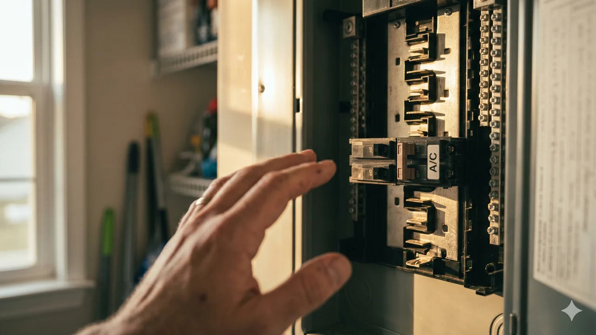

Advertising Disclosure: This site may receive compensation for service connections made through this page. Content is editorially independent.
A breaker trips because something is drawing dangerous current — it's protecting you from a fire. If your AC's breaker has tripped twice in a row, stop resetting it. Set the thermostat to off, leave the breaker alone, and call a qualified HVAC technician. Do not keep resetting. Do not open the service panel. Do not open the outdoor disconnect. Do not spray the outdoor unit with water. Repeated resets on a tripping circuit are how electrical fires start — the single most valuable action you can take is making the phone call.
Circuit breakers exist because the National Electrical Code (NFPA 70) requires overcurrent protection on every residential branch circuit. When a breaker trips, it has detected a condition — sustained over-current, a short, a ground fault — that will eventually overheat the wiring and start a fire. The safest action for a homeowner is to set the thermostat to off and call a qualified HVAC technician. If the breaker has already tripped, the circuit is already open — you do not need to touch the breaker at all. Do NOT reset the breaker a third time hoping it will hold. Do NOT open the service panel to inspect anything; residential service panels carry 240V split-phase and the bus bars are live even when individual breakers are off. Do NOT open the outdoor disconnect or the outdoor unit's cabinet. If the breaker smells hot, is warm to the back of your hand, or looks scorched, or if you see smoke or burning smell anywhere, evacuate the area and call 911 or your fire department — then call a qualified electrician. Nothing about this problem is worth a risk to your safety.
Why a Breaker Trips in the First Place
A residential central AC runs on a dedicated 240-volt, two-pole breaker — typically 30 amps or 40 amps depending on system size. The breaker's job is simple: if the circuit pulls more current than it is rated for, for long enough, the breaker opens and cuts power. There are four conditions that cause a trip:
- Sustained overload. The AC is drawing more current than rated for minutes at a time — the most common HVAC trigger.
- Short circuit. Two conductors touch directly (hot-to-neutral or hot-to-hot), creating a near-zero resistance path and a massive inrush of current. The breaker trips in milliseconds.
- Ground fault. Current is leaking to ground (often through a failed compressor winding that has shorted to the outdoor unit's metal cabinet). A GFCI or AFCI breaker catches this; a standard breaker may not.
- Inrush on startup. A compressor's locked-rotor amps (LRA) at the instant of startup are 4 to 6 times the running amps. A weak capacitor or a worn compressor extends that inrush long enough to trip a standard breaker — even when the system looks fine once it gets going.
Knowing which of those four is happening changes the diagnosis. That is why this is a measurement job, not a guess job.
The 6 Root Causes of a Tripping AC Breaker
In rough order of frequency, here are the six specific failure modes homeowners call us about.
1. Clogged Air Filter or Dirty Evaporator Coil (Most Fixable)
A restricted airflow path forces the blower motor to work harder and the compressor to run longer, warmer cycles. Both draw higher amps. On a system that was already running close to breaker capacity, that extra load is enough to trip. The two-minute DIY fix is a fresh filter every 60 to 90 days. If a filter change does not stop the trip, see our guide on AC freezing up in summer, since a dirty coil often shows up as ice before it shows up as a breaker trip.
2. Dirty Outdoor Condenser Coil
The outdoor coil rejects all the heat the indoor coil absorbs. If the fins are packed with cottonwood fluff, grass clippings, dryer lint, or years of grime, the condenser cannot dump heat fast enough. Refrigerant pressure climbs, the compressor works harder against that pressure, and amp draw climbs with it. Annual professional coil cleaning is the standard fix — a technician will shut off power at the disconnect, inspect for pest damage, and use the right coil cleaner and water pressure. This is not a DIY task because the outdoor cabinet contains live high-voltage wiring even with the breaker off.
3. Failing Dual-Run Capacitor
The dual-run capacitor inside the outdoor unit gives the compressor and fan motor the extra push they need to start. A capacitor that has lost capacitance (microfarads) cannot supply that push, and the compressor sits in a locked-rotor condition for an extra second or two — long enough to trip the breaker. A failing capacitor is the single most common technician finding on a repeatedly-tripping AC. Related pattern covered in our guide on AC compressor buzzing, fan not spinning. Do not attempt to test or replace a capacitor yourself. Capacitors store a dangerous charge for minutes after the power is cut and must be discharged with an insulated tool.
4. Compressor Hard-Starting or Going Bad
Beyond a weak capacitor, the compressor motor itself can wear out. As the internal windings age, bearings degrade, or oil thins, the compressor takes longer to reach running speed — and each start pulls elevated inrush current for longer. A technician will measure locked-rotor amps and compare to the compressor's rated LRA stamped on the nameplate. If LRA is more than 10 to 15% above rated, the compressor is on borrowed time. A failing compressor that trips the breaker is almost always a replace-the-compressor or replace-the-system decision — $1,200 to $3,500 for the compressor alone, often pushing toward full replacement on older systems. For the cost-side of that decision, see our honest 2026 HVAC cost guide.
5. Loose Connection or Short in the High-Voltage Wiring
Terminal lugs inside the outdoor disconnect, the contactor, or the compressor terminal box can loosen over years of thermal cycling. A loose connection creates high resistance, heat, and eventually an arc — which trips the breaker as current spikes. A chewed or rodent-damaged wire between the disconnect and the unit creates the same pattern. This is strictly a technician job with a multimeter and an insulated driver — there is nothing a homeowner can safely check inside any of these enclosures.
6. The Breaker Itself Is Failing (Rare)
Breakers do wear out. After 20+ years, a breaker's thermal trip element can weaken and begin tripping at currents below the rating. If a technician measures normal amp draw across the AC and the breaker still trips, the next step is replacing the breaker — and that is a qualified electrician's job, not an HVAC technician's, because it involves work inside the live service panel. A breaker replacement typically runs $150 to $400 in 2026.
Get connected with a technician in your ZIP code.
Call Now — (844) 582-1795Disclosure: We are a referral service and may receive compensation for qualified calls. Calls may be routed to an independent provider network and may be recorded. Pricing and availability vary by provider and location.
What You Can Safely Do Before Calling
The safe homeowner response to a tripping AC breaker is deliberately short — shorter than most troubleshooting articles — because the risk of getting it wrong is measured in fires and electrocution, not inconvenience. If you only do one thing, make the phone call. Everything else below is optional and should be skipped if you have any doubt.
- Do not reset the breaker more than once. If it trips and resets cleanly, monitor the system. If it trips a second time, leave it alone and do not keep trying to flip the breaker back on — forcing a tripping circuit to carry current is how electrical fires start.
- Turn the thermostat OFF. This is the single safest action. It stops the system from attempting to restart and involves no electrical work. If the breaker is already in the tripped position, you do not need to touch the breaker at all — the circuit is already open.
- Optional, only if comfortable: replace the air filter. A fresh filter of the same nominal size and MERV rating is a no-tools task and sometimes resolves a marginal tripping pattern once the technician has verified the rest of the system. If you have any doubt, skip this and let the technician do it.
- Optional, only if you can do it from a safe distance: clear loose debris away from the outdoor unit. Pull grass, leaves, seed fluff, and stored items at least 2 feet away on every side. Do NOT spray the unit with a garden hose, do NOT touch the outdoor disconnect, and do NOT open the cabinet. Wiring inside both the disconnect and the cabinet can still be live even when the breaker is off. If you are not 100% comfortable approaching the unit from the outside, skip this step entirely.
- Call a qualified HVAC technician. This is the most valuable action you can take. If the same breaker also trips with the AC completely off at the thermostat, the fault is in the house wiring and you need a qualified electrician, not an HVAC technician.
That is the complete safe-DIY list. Do not open the service panel to inspect the breaker. Do not open the outdoor disconnect box. Do not open the outdoor unit's service panel to look at the capacitor or the contactor. Do not spray the outdoor unit with water. Do not try to measure amperage with a consumer-grade multimeter. Do not try to test or discharge a capacitor. Any of those steps puts you in direct contact with 240-volt wiring or a capacitor that can hold a lethal charge for several minutes after power is cut — and none of them speeds up the technician's diagnosis.
When to Stop and Call a Professional
Because the safety stakes are higher on this symptom than most AC issues, the "stop and call" list is longer. Call a technician if any of these are true:
- The breaker trips a second time within minutes of being reset.
- The breaker smells hot, is warm to the back of your hand, or looks scorched or discolored. Do not touch it — call an electrician, not HVAC.
- You see visible damage to wiring at the outdoor unit — chewed insulation, blackened terminals, or a wire pulled loose.
- The system makes a loud hum or buzz without the fan spinning up before tripping. That is the classic failing-capacitor pattern.
- The outdoor unit blows cold air briefly and then trips. That is the classic hard-start pattern — a compressor that pulls inrush for too long.
- The same breaker trips with the AC fully off at the thermostat and at the outdoor disconnect. That is a house-wiring problem and requires a qualified electrician.
- The system is older than 12 to 15 years and the breaker trips alongside weak cooling. Multiple failure modes are common at that age.
- You have infants, elderly family members, or anyone with a heart or lung condition in the house and you can no longer run the AC safely. Move them to a cooler space while the system is being diagnosed.
For the full map of every AC failure mode and how they interconnect, see our complete AC troubleshooting guide. If your system is cooling only weakly before it trips, our guide on AC running but not cooling below 80° covers the underlying airflow and capacitor patterns. If water is now leaking from the indoor air handler as well, see how to stop HVAC water leaks before they damage drywall and flooring.
What a Technician Will Actually Check
A thorough diagnosis on a tripping AC circuit should include every one of these measurements. If a technician quotes you a repair without showing you the numbers, ask for them.
- Clamp meter on the compressor and fan motor leads. Shows running amps and locked-rotor amps. The LRA reading compared to the compressor's nameplate LRA tells you whether the compressor is within spec or on its way out.
- Capacitor microfarad test. A multimeter in capacitance mode reads the actual stored charge against the capacitor's rated value. Anything more than 10% below rated is a replace.
- Contactor inspection. Pitted or welded contact points, burned coil, or chattering on pull-in. Any of those is a replace.
- High- and low-side refrigerant pressures. High-side pressure well above normal points to a blocked condenser and explains elevated amp draw. Under EPA Section 608, refrigerant handling is federally regulated and certification is legally required — gauges and recovery are not a homeowner task.
- Voltage at the disconnect. Confirms the service panel is delivering proper 240V split-phase to the outdoor unit. Low voltage under load (below ~208V) indicates upstream problems that belong to an electrician.
- Visual inspection of wire terminations. At the contactor, the compressor terminal box, and the disconnect. Looking for scorch marks, loose lugs, and pest damage.
A technician who skips straight to "you need a new compressor" without showing you capacitor microfarads and LRA readings is guessing. Ask for the numbers.
What Repairs Cost in 2026
Pricing on this site is anchored to our complete 2026 HVAC Cost Guide, which is the single source of truth for every cost figure — no drift between articles.
- Diagnostic / service call: $65–$150 (often credited toward the repair if approved)
- Capacitor replacement: $150–$400
- Contactor replacement: $100–$300
- Hard-start kit installation: $150–$350 (extends the life of a marginal compressor)
- Blower motor replacement: $300–$1,000
- Compressor replacement: $1,200–$3,500
- Circuit breaker replacement (qualified electrician): $150–$400
- Emergency / after-hours surcharge: $100–$300 added
Estimated ranges based on publicly available industry data and in sync with our complete cost guide. Actual costs vary by region, provider, and system.
Climate Matters: Where Tripping Breakers Show Up Most
Hot-humid climates (Baton Rouge, Brownsville, the Gulf Coast): Long run cycles at high outdoor temperatures push amp draw close to breaker rating for hours at a stretch. A marginal capacitor that survived the shoulder season will often fail during the first real heat wave. Annual capacitor microfarad testing before summer peak is high-value here.
Hot-dry climates (Irvine, Phoenix, Las Vegas): Dust-caked condenser coils are the dominant upstream cause. Fine desert dust bonds to coil fins and forms an insulating layer that drives head pressure up. Annual professional coil cleaning before summer pays for itself in amp reduction — ask the technician to include a coil rinse and fin inspection in the spring tune-up.
Mixed-humid climates (Charlotte, Atlanta, Nashville): The most variable pattern — trips can cluster on the first true heat wave in June or July, when a system that ran fine in May is suddenly asked for peak output. This almost always points to a marginal capacitor or a hard-starting compressor that only shows up under load. Browse local service providers in Louisiana, Texas, or explore all service areas.
Trusted Industry Sources
The guidance in this article is consistent with published recommendations from:
- U.S. Department of Energy — Central Air Conditioning
- EPA Section 608 — Refrigerant Handling Regulations
- NFPA 70 — National Electrical Code
- U.S. CPSC — Home Electrical Safety
- ENERGY STAR Heating & Cooling
Don't wait — get a technician dispatched to your area.
Call Now — (844) 582-1795Disclosure: We are a referral service and may receive compensation for qualified calls. Calls may be routed to an independent provider network and may be recorded. Pricing and availability vary by provider and location.
Frequently Asked Questions
A breaker trips because the circuit is drawing more current than it is rated to carry, which protects the wiring from overheating and catching fire. For a residential AC, the six common causes are a clogged air filter, a dirty outdoor condenser coil, a failing dual-run capacitor, a compressor struggling to start (high locked-rotor amps), a short or loose connection in the high-voltage wiring, and rarely the breaker itself aging out. All but the first two require a qualified technician.
No. A breaker trips to protect you from a fire or an electrocution risk. Resetting it repeatedly forces dangerous current through wiring that the breaker has already identified as overloaded. The National Electrical Code (NFPA 70) exists specifically because breakers save lives when they are allowed to do their job. If a breaker trips once, reset it once. If it trips again within minutes, leave it off and call a technician.
Once. A single reset after an isolated trip is reasonable — transient events happen (lightning, grid fluctuations, a one-time surge). If the breaker holds, monitor the system. If it trips again within the same day, do not reset it a third time. Set the thermostat off, leave the breaker alone, and book a service call. A breaker that trips three times in a row is telling you something is actively wrong in the circuit.
Yes. A severely clogged filter restricts airflow across the evaporator coil, which forces the blower motor to work harder, the compressor to run longer cycles, and both to draw higher amps. On a marginal system — one that was already running near breaker capacity — that extra load is enough to push the circuit over the trip threshold. Replace the filter every 60 to 90 days and monthly if you have pets or high dust, and this failure mode goes away.
Start with an HVAC technician. Most breaker trips on an AC circuit trace back to HVAC components — a failing capacitor, a dirty coil, a struggling compressor — not to the house wiring. A technician will measure amp draw, test the capacitor, check refrigerant charge, and inspect the outdoor disconnect. If the measurements point to a problem upstream of the AC (a damaged breaker, a loose neutral, aluminum wiring, a failing main panel), the technician will refer you to a qualified electrician. Do NOT open the service panel yourself.
If the cause is a dirty filter, the fix is $15 to $35 and no service call. If a technician is needed, expect a diagnostic fee of $65 to $150, a capacitor replacement at $150 to $400, a contactor replacement at $100 to $300, a blower motor replacement at $300 to $1,000, or a compressor replacement at $1,200 to $3,500. A separate circuit breaker replacement is an electrician job, typically $150 to $400. See our full HVAC Cost Guide for the complete 2026 pricing breakdown.
Local HVAC Service Areas
Cool Call Pro connects homeowners with independent HVAC technicians nationwide. Find a pro in Baton Rouge (LA), Brownsville (TX), Irvine (CA), or Charlotte (NC), or browse by state: Louisiana, Texas, or all locations.